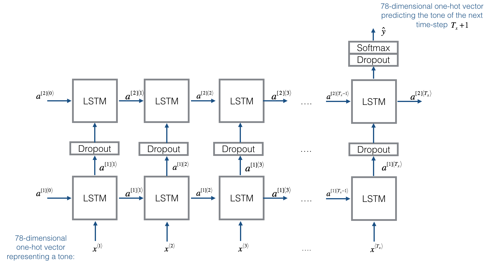

前言
终于把论文投出去了，虽然中的概率很渺茫，但是我肖的态度确实好了不少。终于又可以闲下来好好学学深度学习了，论文的实验过程中用了 LSTM Autoencoder，正好趁着这个机会再强化一下。在上篇学习笔记中，由于恐龙名字不会很长，所以在生成恐龙名字的作业中使用 RNN 已经可以满足任务要求。本次作业是创作爵士独奏，普通 RNN 无法解决长期依赖问题，所以使用了 LSTM。
数据集
数据集是一首长达约8分钟的爵士音乐，下面是其中的一个小片段：
在这次实验中不用考虑和弦，只需要在数据集上训练出一个 RNN 模型，然后用来生成新的序列。首先加载数据 data/original_metheny.mid，然后将它处理成以下形状，每三十个值作为一个序列：
1 | X, Y, n_values, indices_values = load_music_utils() |
训练样本的个数
: 60 序列的长度
: 30 不同的值的总数(独热向量的维度): 78
X 的形状:
Y 的形状:
Y 实质上和 X 相同，只不过是偏移了一步。在训练过程中，给定序列[max_time, batch_size, depth] 和 batch major [batch_size, max_time, depth]。使用 time_major=True 效率更高，能够避免一些转置的操作，因此 Y 的形状是 time major。
模型
模型的结构如下图所示：

每次从 original_metheny.mid 中随机选取 30 个值训练模型。与生成恐龙名字的模型类似，
构建模型
本次实验使用隐藏状态是 64 维的 LSTM，对于序列生成模型，在实验之前输入序列未知，每个时间步的输出生成下一个时间步的输入
- 定义层对象
1 | reshapor = Reshape((1, 78)) |
- 实现
djmodel()- 创建空列表用于存储每个时间步的输出
- 循环
个时间步 - 使用 Keras的 Lambda 层：
x = Lambda(lambda x: X[:,t,:])(X) - Reshape x 的形状成
- 将 x 输入到一个 LSTM_cell 中：
a, _, c = LSTM_cell(input_x, initial_state=[previous hidden state, previous cell state]) - 输出经过激活函数和全连接层后，保存到输出列表中
- 使用 Keras的 Lambda 层：
1 | def djmodel(Tx, n_a, n_values): |
接下来使用 Adam 优化和一个分类的交叉熵损失训练模型 100 个 epochs：
1 | model = djmodel(Tx = 30 , n_a = 64, n_values = 78) |
生成

在采样的每个时间步中，输出被用于生成音乐和作为下一个时间步的输入。实验步骤如下：
- 使用 LSTM_Cell，输入时上一个时间步的输出
y和隐藏状态a - 对当前时间步的隐藏状态
a使用softmax函数，将输入加入输出列表中 - 对输出使用
x = Lambda(one_hot)(out)转化成独热向量，输入下一个时间步
1 | def music_inference_model(LSTM_cell, densor, n_values = 78, n_a = 64, Ty = 100): |
定义推断模型和初始化参数：
1 | inference_model = music_inference_model(LSTM_cell, densor, n_values = 78, n_a = 64, Ty = 50) |
预测输出：
1 | def predict_and_sample(inference_model, x_initializer = x_initializer, a_initializer = a_initializer, c_initializer = c_initializer): |
生成音乐：
1 | out_stream = generate_music(inference_model) |
总结
这篇博客写的有点简单，因为 Coursera 的资料也比较全面了，而且和恐龙名字生成模型也很类似。如果我再去仔细分析它各个工具的实现感觉进度有点慢，所以只是简单地实现了作业内容，再加上自己对整个作业的理解。
参考文献
- 吴恩达. DeepLearning.